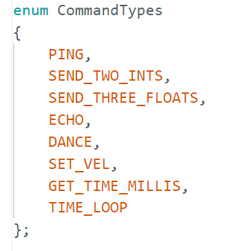
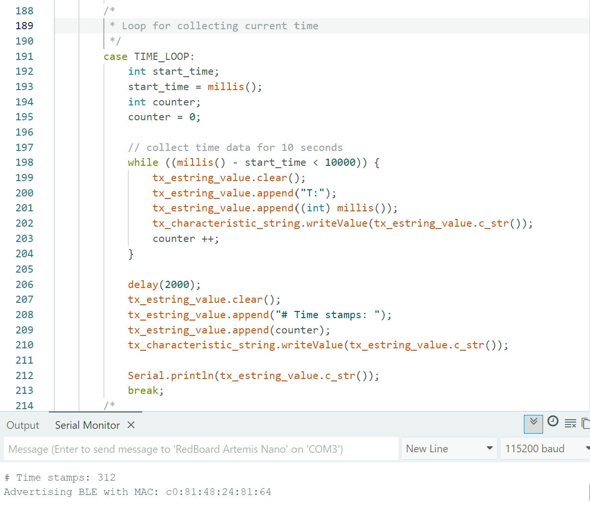
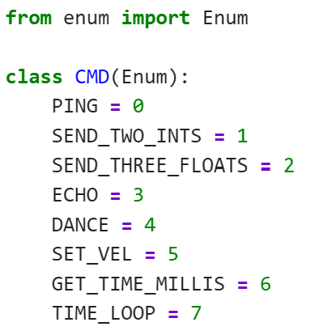
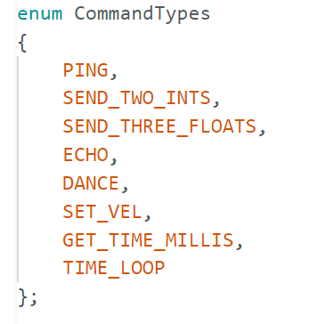
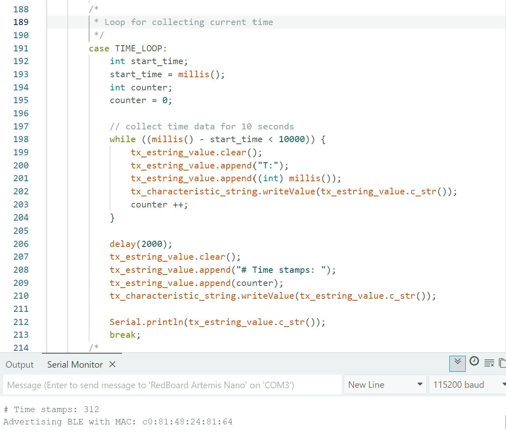
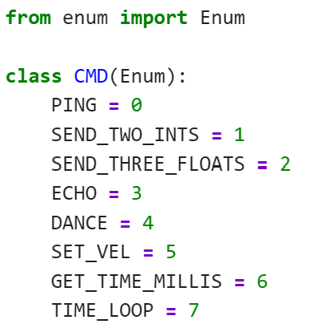
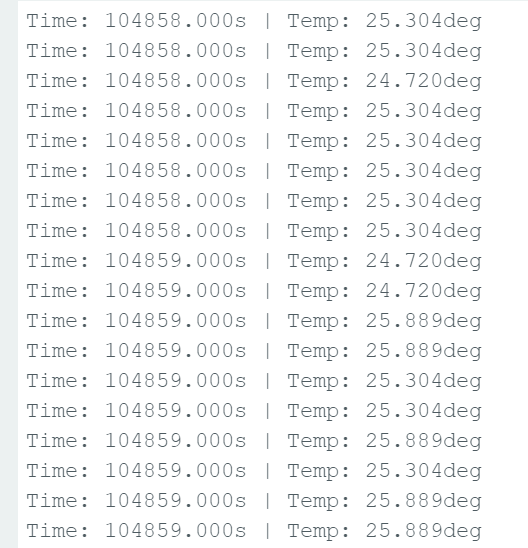
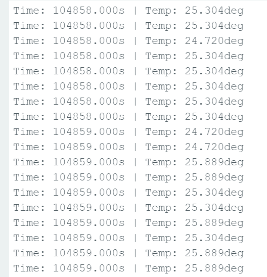

I used USB connection to connect my laptop to the Artemis boad.

In Arduino IDE, the target board is set to be "RedBoardArtemis Nano", and the port is set to "COM3".

A string "ggggg" is sent as input to serial port, the board sent back the same string and print out on the serial monitor.
The board has a built-in sensor as peripheral controlled by the microcontroller. I tried to use hand to head up the board, constantly updated data about temperature is printed out on the serial monitor
The board has a built-in microphone. I spoke to the board changing my voice, the board is printing out data about detected sound constantly on the serial monitor.
A new UUID is generated and printed out with MAC address on the laptop. The parameters (BLEService UUID, MAC address) in the connections.yaml and ble_arduino.ino files are both updated.
A string is sent from computer to the Artemis board using the ECHO command. The computer receive and print an augmented string.
Inside the case of ECHO, I initialize a char variable "char_arr", used functions (append, get_next_value) to set the form of the string to be printed, then use serial print to print the string in serianl monitor.
In Jupyter lab, laptop sends command using ble.send_command, and print out the received string with ble.receive_string and print.
Three floats (1.20, 2.50, 3.50) in string form were sent to Artemis board using the SEND_THREE_FLOATS command, then the board extract the three floats values from the string in the Arduino sketch.
Inside the case of SEND_THREE_FLOATS, I initialize three float variables (float_a, float_b, float_c), then use function get_next_value to extract the floats by order. After that we used serial print to print out extracted floats on serial monitor.
In Jupyter lab, laptop sent three floats in this form "1.2|2.5|3.5", then I observed results printed on serial monitor.
A command GET_TIME_MILLIS is added, this command is for making robot replya string containing time information.
A case of GEAT_TIME_MILLIS is added in the loop, accordingly it is also added in the global variables and cmd_types accordingly. I initialize int variable "time", use function millis() to extract current time in milliseconds, store current time data in variable "time", then format the extracted informaiton and serial print it.
In Jupyter lab, command GET_TIME_MILLIS is called, the printed out string is in form of "T:[current time in milliseconds]"
A notification handler is setup in Python to receive string value (BLEStringCharacteristic in Arduino) from the Artemis board. The handler is able to extract time from the string.
In Jupyter lab, a function notification_handler is created, parameters are uuid and byte_array. time_string is extracted and then split to delete prefix "T:". Extracted time is would be printed out then.
By calling command start_notify with parameters of uuid and notification_handler, the handler will be started.
 





A loop is written for constantly processing current time sent to computer with notification handler.
A new command TIME_LOOP is created, global variables and cmd element are created accordingly. two variables "start_time" and "counter" are initialized for counting time stamps. By applying a condition that most updated timestamp should not be 10secs after starting time, timestamps returned within 10 secs were printed on serial monitor and python file with the help of notification_handler. The counter records number of time stamps being extracted.
From the printed result, number of time stamps returned is around 312, this number may change everytime according to real-time delay. Thus, the effective data transfer rate of this method is 31.2 readings/secs
An array global_time_array is created for storing time stamps. A command SENT_TIME_DATA is created for looping the array and sending each data point as a string in format "T:[current time]" to laptop to be processed by the notification_handler.
I initialized two arrays, one global variable "global_time_array", one in scope of case SEND_TIME_DATA "time_array". They could store 41 elements. I used two loops, one for storing time data in the array, the other for formatting and returning stored time data in string form.
 

A second array with same size as the time stamp array is created for storing temperature readings. A command GET_TEMP_READINGS is added for looping though both arrays concurrently and sending each temperature reading with a time stamp. The notification handler should parse these strings and add populate the data into two lists.
A new case GET_TEMP_READINGS is added, within this case array "temp_array" with same size of "time_array" is created. Three loops are implemented, 1st for replicating data from global time array to local time array, 2nd for storing temperature reading into the temp_array, 3rd for formating the timestamps and temperature readings into strings & serial printing them & sending to laptop.
The notification handler is updated for slicing string with both time stamps and temerature readings.
CPU time = 15.6ms, Wall time = 120ms
⬅ Back to Home